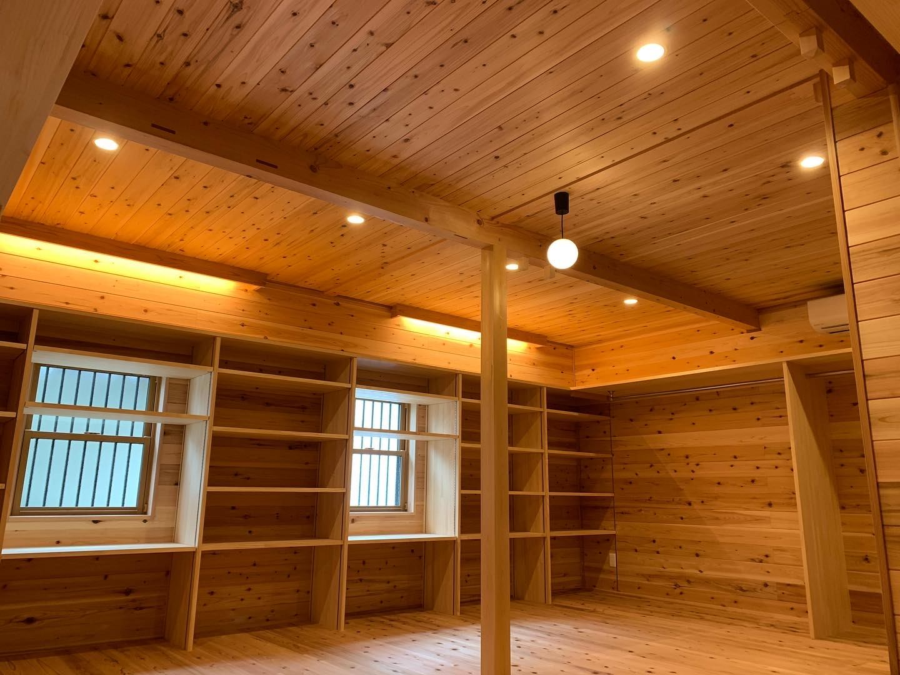
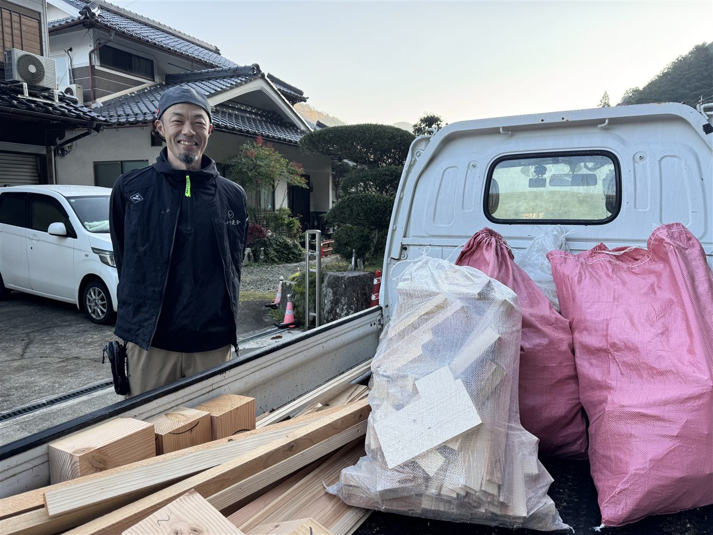

窓の結露・窓ぎわが寒い
内窓の取り付け、断熱ガラスへの交換
- 工事
- 今の窓の内側に、もう一枚窓を付けます。窓1か所から対応します。
- 補助金
- 先進的窓リノベ2026事業（最大100万円）

いとう建舎の伊藤です朝来市・養父市の大工
内窓や断熱で、冬の寒さをやわらげます。窓1か所、一部屋からうかがいます。
施工例
床をはがして、下地から組み直しました。そのうえに、新しい床を張っています。
リビングの床を無垢のフローリングに。冬でも素足で歩きやすい床です。
冬のお住まい
ひとつでも当てはまれば、その場所の写真を1枚送ってください。工事の内容と費用の目安をお返しします。
ご相談の流れ
冬の間も工事できます。雪の日は、天候に合わせて日程をご相談します。春の工事の相談・見積だけでも受け付けています。
代表あいさつ

はじめまして、いとう建舎の伊藤です。但馬で生まれ育ち、大工として25年、この地域の家を見てきました。
古い木造の家ほど、但馬の冬はこたえます。窓1か所、一部屋からでも暮らしは変わります。「いくらくらい？」の一言で構いません。
代表 伊藤 紘史
但馬で大工25年 ／ 累計250件以上の施工
床の写真を1枚送ってみたら、翌朝に「床だけでも全然OKです」と返信が。今は素足で歩くのが気持ちいいです。
お客様の声 M・T 様（35歳）／ 朝来市
※実際の感想をもとに再構成
よくある質問
はい、大丈夫です。いちばん寒い部屋の窓1か所からでもご相談ください。
もちろんです。相談・見積・現地調査はすべて無料で、しつこい営業はしません。
はい、冬の間も工事できます。日程は天候に合わせてご相談します。
はい。古い木造の家や古民家の工事も多く手がけています。
まずは写真を1枚
寒い場所の写真を送るだけ。最短翌日に、工事の内容と費用の目安をお伝えします。
友だち追加 → 1枚撮る → 送るだけ